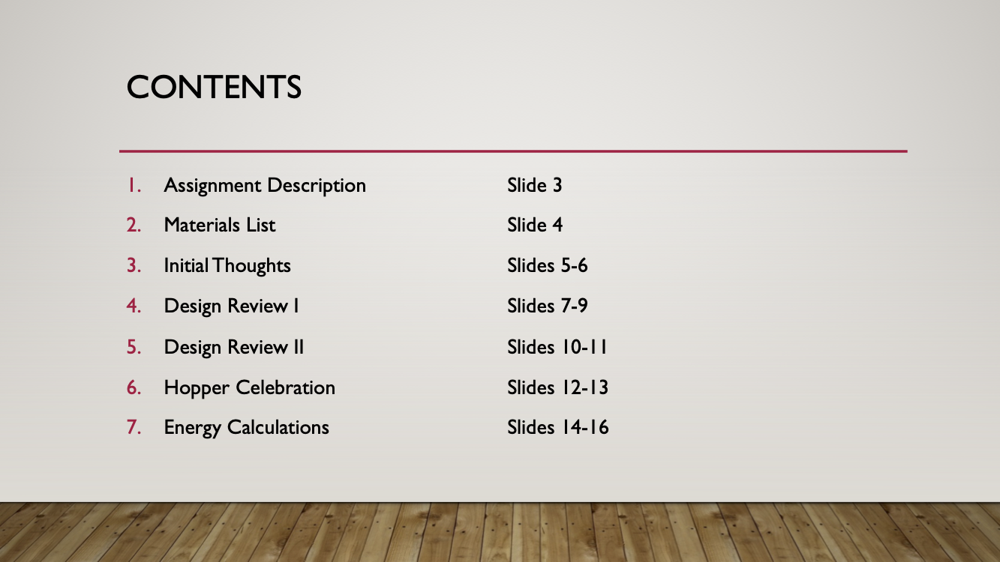

Below I have assembled projects and portfolios from the courses I have completed in Wesleyan's Integrated Design, Engineering, Arts, and Society (IDEAS) program. I enjoyed all of my IDEAS courses and learned many practical skills and software programs through them. The software I learned in my IDEAS courses includes Arduino; Ultimaker Cura; Solidworks; and Adobe Illustrator, Photoshop, and After Effects. I then made use of those programs in the courses through projects involving laser cutting, 3D printing, digital design and animation, and more.
I have taken the following courses to complete the IDEAS-Materials Science Minor:
I made a baseball game for my final project of COMP 112. The video above shows the gameplay for a single game. Users have the option to input their team name and the length of the series before the fun begins. Every game the user squares off against the Pythons, where the user can only play offense. Each pitch is a random number between 1 and 25. The player must guess the random number and is rewarded with a home run for a correct guess, or with another type of hit if their entry is close to the target number. If the guess is too far off, then the player is given an out. There are no walks or strikeouts, but the player has the option to sacrifice bunt (there is an 80% chance that the bunt safely advances the baserunners). The user recieves an update of the score and their batting average after each inning. Records are also kept; after each game and series the user is prompted with their statistics and shown how they match up against the all-time bests for a series of the same length.
In the climber project our task was to design and electromechanical body that climbs across a horizontally placed ladder (essentially monkey bars). The body was only allowed to grab onto the rungs of the ladder, not the side rails. Unlike the hopper project, there were no strict material limitations. My team's final design goal was to have our climber transition from rung to rung by 180-degree flips with the help of a mechanism that shifts its center of mass. As can be seen in the video, the climber intially shifts to the left so it unhooks from the left rung. Then the initial right arm pulls the body up as high as the small motor will allow. The additional weight is then shifted to the left of the attached arm, allowing for the body to be pulled high enough for the hanging arm to reach the subsequent rung. The idea was for this process to repeat for the length of the ladder; however, there was an issue with our weight-shifting mechanism. The rack we used allowed the additional weight to be located outside the frame of the climber on only one side, an asymmetry in the design. This issue meant that the flip could only work on one side, thus our climber could not traverse the full ladder. Our next step would have been to change the rack and weight combination to be symmetric, which would allow for climbing on both sides. Other items we considered adding were whisker switches or force sensors. Those would have provided live feedback and significantly decreased the risk of a timing failure that was present in the "blind reckoning" method we used in our code.
I had a great time in IDEA 175 my freshman year; this course strengthened my desire to pursue the IDEAS minor. Over the course of the semester I became introduced to circuitry, Arduino, Solidworks, laser cutting, and 3D printing. I credit this course and my final project to my current love of 3D printing.
One of the many mini-projects we were assigned throughout the semester was line following. The task was to use an IR LED/detector and our knowledge of Arduino to have our robot car follow a path given by a dark line. The paths varied in difficulty, and I included a sample of one in the above video. As can be seen in the video, when the sensor was over light (white) space I had the car turn left, and when it was over dark (black) space I had it turn right. This basic solution was successful for every path except for the one that had "extreme" difficulty — that one required a few modifications. The exercise allowed me to become more comfortable with Arduino coding and also taught me a lesson about the power of simplicity in design.
The image above shows Dr. Vernet Eaton with an angular momentum demonstration that is still used by Wesleyan's physics department.
The final project for HIST 176 was to write a research paper that was grounded in locally available archival sources. After discussions with Professor Erickson, I arrived at my topic of Dr. Vernet Eaton. I was fascinated with what I found because I had previously never heard of Dr. Eaton; he does not seem to be well-known in the Wesleyan physics department. Unlike the typical noteworthy physicist, Eaton's legacy lies in his contributions to physics education, not research. In 1955, Dr. Eaton was awarded the Oersted Medal for his "notable contributions to the teaching of physics." The Oersted Medal is the highest award presented by the American Associastion of Physics Teachers and has been given to many renowned physicists such as Dr. Richard Feynman. Dr. Eaton's pedagogical prominence was displayed on the national scale when he joined NBC's TV show Continental Classroom as part of a national effort to teach americans physics during the Cold War. In addition to his national accolades, Dr. Eaton had a lasting impact on Wesleyan and the greater Middletown community.
The first section of my paper outlines a breif history of physics at Wesleyan from its inception to the time of Dr. Eaton. Physics education on the national scale at the time is also discussed. The second section of the paper is centered on Dr. Eaton. I review his ideas and contributions regarding the demonstration lecture and introductory laboratory course, while also examining his enduring impact on physics education.
Click here to read the paper.

The assignment was to first generate a collection of images representative of a clearly defined category. Then, we were asked to isolate an object from each image using techniques we learned in Photoshop. After extracting the objects, we were instructed to arrange them into a composition.
My collection is composed of photos that captured memorable moments in professional athletics. The background is a photo taken during the infamous power outage amid Super Bowl XLVII. I chose images from the 2001 MLB World Series, 2010 NHL Stanley Cup Finals, 2014-15 NFL Super Bowl, 2016 NBA Finals, and more. The objects I selected were all taken from the losers of the competitions. For example: Russel Wilson's arm moments before his goal-line pass was intercepted to end Super Bowl XLIX.
Our assignment was to create a seamless animated loop based on a poster from The Library of Congress's Print and Photographs Division collection of WPA posters. We were first assigned to make a perfect copy of the poster in Illustrator. Upon completing the first step, we were instructed to craft a looping animation that brought our perfect copy to life.
This is the original poster that I chose.
The assignment that I chose for my final project was to "imagine a future using an approach framed by the speculative design methods introduced in the course." My imagined future took the form of a brief animated video. The animation required many skills we acquired throughout the course such as isolating objects in Photoshop, creating a perfect copy with Illustrator, animation with After Effects, and more.
The assignment was to select a digital artist and create a presentation that includes the artist's biography, exhibition history, and career work. We were asked to identify some of the major themes, techniques, and art historical conversations with which the artist is engaged.
I chose Jonathan Monaghan because I found his digital animations to be mesmerizing. You can view pieces of his work here.
The truss project was a fun way to end the IDEA 210 course. The video above shows our truss in action; the iteration shown failed under a load of 113.5 pounds. We undertook many other stimulating projects throughout the semester: our laboratory exercises covered many interesting topics such as material classification, failure modes, and failure testing.